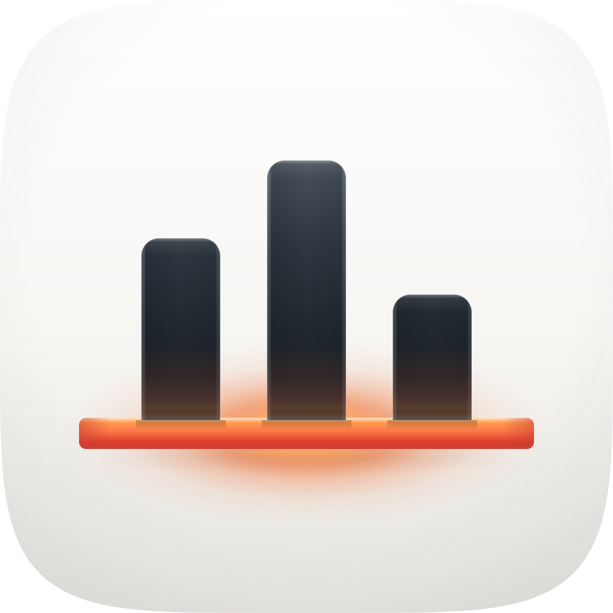
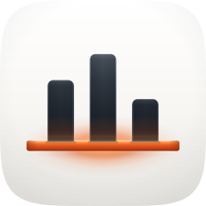
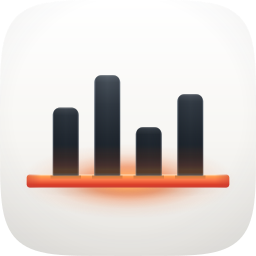
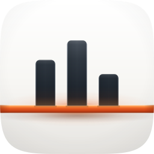
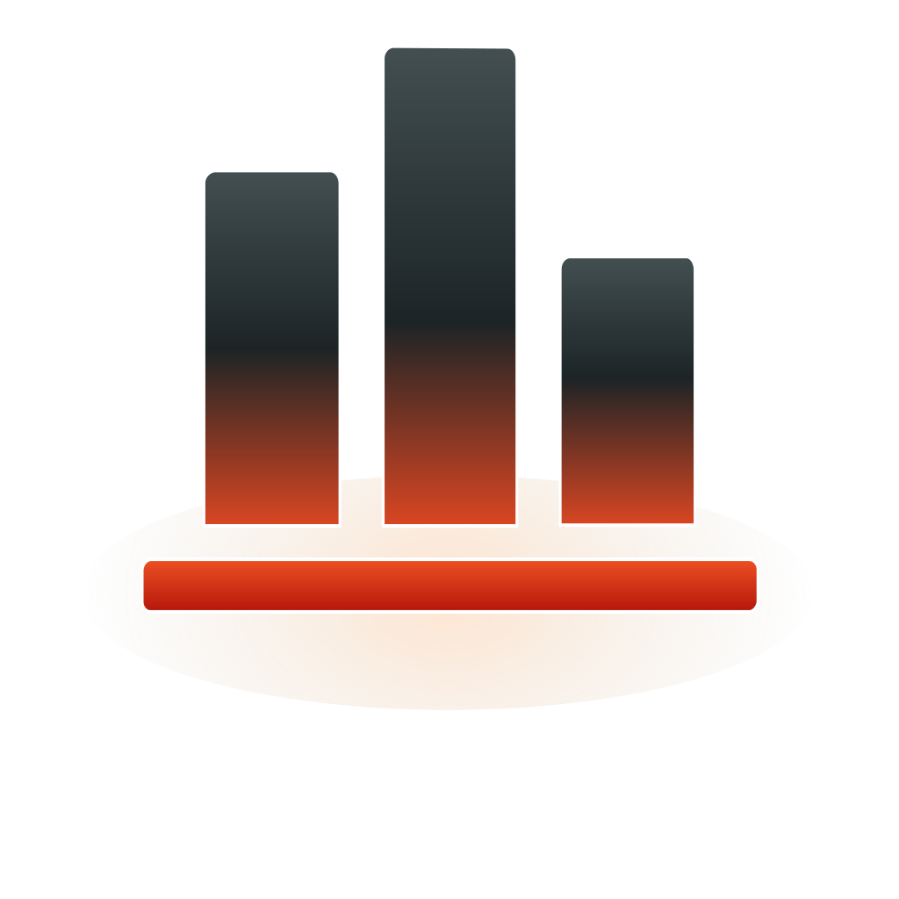
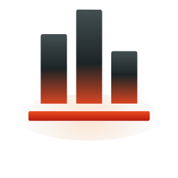
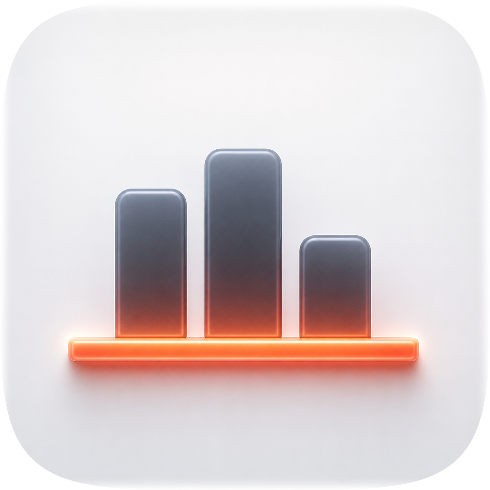
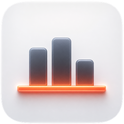
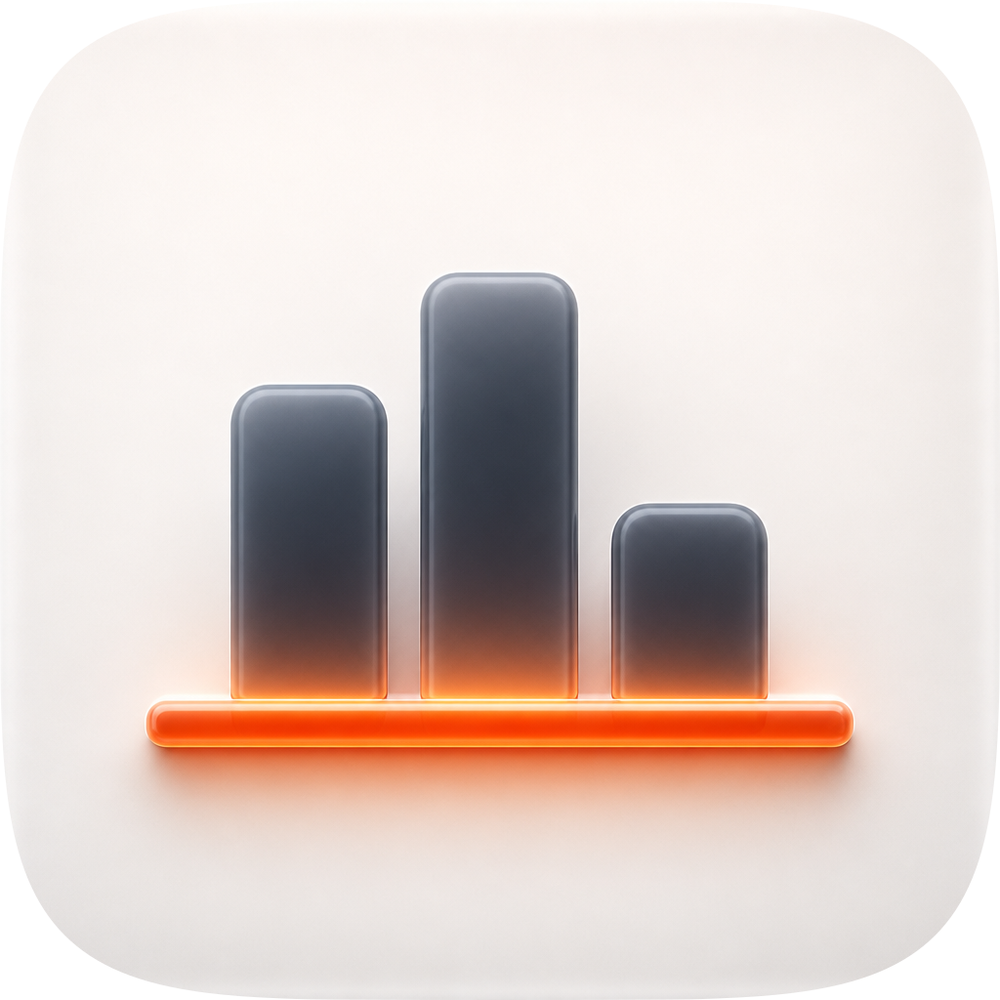
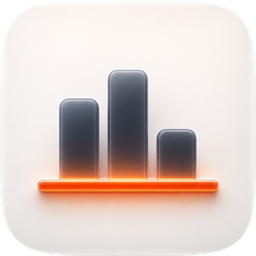

| Take | Hero at 1024, then renders at 128 / 64 / 48 / 32 / 16 css px (2× retina sources), plus the 16px squint magnified | Rubric | Verdict |
|---|---|---|---|
| A1 · icon.svgEngine A — hand-authored layered SVG, after five fidelity rounds — SHIPS (16px and below from icon-small.svg) |   |
12 / 12 | Checks 1–4 all clear on the real renders: designed inside the shared squircle from squircle-path.txt with no baked corner or shadow; optically centred at y=509; nameable filled black (three uprights on one rule); and the accent survives 16px at chroma 178 with figure-ground 15.1:1. Four named layers and one userSpaceOnUse light field shared by every bar. After r04 the rule reads as a source rather than a fill — the halo blooms onto the porcelain at 140 chroma against C1's 146 at dy 40, and each bar's foot gains luminance into the rule (145, against C1's 141) instead of darkening into it. After r05 its face holds the light too: red now tracks C1 within a few points down the whole face (face mean 234 against C1's 240, where it was 211) with R−B held at 175–177 through the body, so it stays a lit cylinder rather than flattening into a fill. Its 104px overhang is the reference's own measured mean and is what makes the rule a datum rather than a plinth. It remains less vibrant than C1 at the bars, deliberately and measurably — see the liabilities. |
| A2 · icon-A2-fourbar.svgEngine A alternate — four bars at 104px on 62px gaps |  |
9 / 12 | Lost on check 4, which is non-negotiable. A fourth bar costs every bar 28px of width and every gap 16px, so at 16px a bar is 1.63px and a gap 0.97px — sub-pixel, and the ×6 magnification shows the middle pair merging into one mass while the outer two stay separate, which reads as an uneven four-bar chart rather than as three. Self-contrast at 32px also falls to 0.671 against A1's 0.706. Everything else it does, A1 does; the fourth bar buys no meaning, because the subject is the rule. |
| A3 · icon-A3-edgebleed.svgEngine A alternate — the rule bleeds off both edges of the tile |  |
9 / 12 | The strongest losing take and the closest call on the sheet. Running the rule to the mask edge is a sanctioned device (edge-bleed physicality, Contacts' index tabs) and it makes the "wider than its data" argument maximally: an axis with no visible end. It loses on check 4 and on personality. At 16px the rule becomes a full-width band touching both edges and the eye reads the tile's own bottom border, not an object — self-contrast drops to 0.522 against A1's 0.600. And an unbounded rule is the generic move: A1's finite overhang is what says this datum was chosen, which is the whole subject. |
| B · icon-engineB-arrow-8b9a27.svgEngine B — Arrow 1.1 vector take from the spec-as-brief |   |
6 / 12 | Hard-fails check 1. It emits a 160 × 126.5 non-square viewBox with no background field, so it arrives field-less and letterboxes inside the mask — the renders above show it floating with white above and below where every sibling has a cushion tile. It also fails check 10 (zero named layers, so no layer plan survives to Icon Composer) and check 6: it puts the warm ramp on the bars, running each one from graphite into vermilion at its foot, which spends the accent on the context and leaves the rule flat red — the exact inversion of the concept. Salvaged into the master: nothing. Its one useful contribution was negative evidence, that a brief describing a bounce on the bars invites a generator to colour the bars. |
| C1 · icon-engineC-22d450-2-masked.pngEngine C — GPT Image 2 raster, corpus-referenced (apple-26 / 31 / 19 / 23) · the material reference for the fidelity loop |   |
8 / 12 | Won the material read and lost the delivery, which is the expected result for this engine. Its bars are genuinely translucent and its rule genuinely emits — the halo on the porcelain reaches chroma 197 where the first master managed 19. But it is a flat pre-masked raster, so it hard-fails check 10 with no layers to survive Dark/Clear/Tinted, and its figure-ground is 8.7:1 against A1's 15.1:1, with self-contrast collapsing to 0.469 at 16px. This is the corpus's named trap: converging on it wholesale would have dragged the master below the rubric floor. It served as the loop's reference, not as a candidate. |
| C2 · icon-engineC-273b7f-masked.pngEngine C second take — same prompt, same references |   |
7 / 12 | Lost to its own sibling. Same flat-raster #10 failure as C1, plus two of its own: the rule is pushed to chroma 250 and blooms into a neon tube rather than a lit datum, which breaks the single-light model (check 5) by making the accent read as a separate emissive source competing with the top light; and the bars are offset left of centre against a rule that is not, so the composition is off its own axis (check 2). Its bar tops are the crispest on the sheet, which is why it was kept and scored rather than discarded — but nothing was taken from it. |
self_contrast watches the p10 luminance bin, and that bin is entirely bar interior (bounding box x238..786, y297..700, measured, with no porcelain in it) — so brightening the ground is free and brightening the bars is not. Fitting the bounce to C1's measured +174 chroma needs BOUNCE_PEAK ≈ 0.62, which drops self-contrast from 0.737 to 0.663 at 1024 and 0.702 to 0.608 at 64. An eight-point sweep found the cost near-linear in the gain with no knee; 0.26 is the largest value holding every invariant, leaving bar chroma at 39 against C1's 121. Worth knowing why the gap is legitimate: C1's own self-contrast is 0.533 against A1's 0.737 — it buys vibrancy with figure-ground, because a flat pre-masked raster has no 16px obligation and no Dark/Clear/Tinted variants to survive. The options, if the remaining gap still matters: spend figure-ground deliberately by lightening GRAPHITE_LOW; add a third file for 256-and-above carrying the full bounce; or rebuild the bars as genuinely translucent, which is a different construction and its own commission. (2) The icon already ships as two files — icon.svg at 48px and above, icon-small.svg below — because the edge catch costs 0.078 of self-contrast at 32px; that split is measured and deliberate, but it is a second file that can drift and an edit to one must be made to both. (3) The rule spans 74.2% of the tile, above the 55–65% composition band; justified because a 52px-tall rule occupies 3.8% of tile area and the corpus-steered reference sits at 72.6%, but it is a deviation and the first thing to re-examine if the icon reads wide beside its siblings.| Round | Edit class | Gate | Net composite | Outcome |
|---|---|---|---|---|
| r00 | baseline — master vs the C1 raster | — | — | Reference established. Material metric engaged (torch installed), so the verdict covers material rather than structure alone. |
| r01 | the halo well — the rule's light on the porcelain | REJECT | −0.0298 | Fitted the falloff to the reference's measured curve (chroma 197 / 153 / 77 / 34 / 13 / 0 at dy 0–110). Rejected at 128 / 32 / 16. Kept, because r02 identified the real cause. |
| r02 | the overhang — one geometry constant | ACCEPT | +0.0194 | The reference overhangs its bar group by 98/110px against the master's 46, on bar groups within 3% of each other. Raising it to 104 cleared all three of r01's regressions. |
| r03 | the edge catch — the bars' cross-section | REJECT | +0.0111 | Composite rose; self-contrast at 32px fell 0.598 → 0.535, past the floor. The gate was right and the similarity score was not. |
| r04 | the emission — the rule as a source | ACCEPT | +0.0150 | Three edits: the contact shadow was drawn over the bloom and cancelling it (67 vs 107 chroma at dy 40); r01's halo measurement was contaminated by sampling on the reference's own rule, so the well was half the size it should be; and the graphite ramp darkened into its own light source, so the warm term read as rust. First round to take 256 above the r00 baseline: 0.7205 → 0.7237. |
| r05 | the rule's face — three gradient stops | ACCEPT | +0.0147 | r04 lit everything the rule touches but not the rule itself: its face fell away from t≈0.20 and bottomed at #8C2E0F, a dark rust, where C1 holds red at 252–254 through t=0.63. The three lower stops refitted from C1's own face column — its red at each depth, blue set for the target R−B, its G−B gap preserved. Face mean red 211 → 234. All five sizes improved. |
What r05 cost. Self-contrast on the master at 32px fell 0.530 → 0.507. That size ships from icon-small.svg, not the master, so as delivered the movement is 0.607 → 0.603 — a 0.7% drop against the gate's 6% floor, with every other shipped size bit-identical to r04. A brighter face raises the render's 10th percentile slightly; it is a real cost and it is small. The 16px accent chroma also moves 198 → 178, because the fitted underside is lighter and less saturated than the rust it replaced while being far brighter in red.
What r04 found, and what it could not fix. The biggest single cause of the emission gap was not a material constant at all — the contact shadow was drawn on top of the bloom and eating 40 points of chroma in exactly the band where the glow is legible, a draw-order bug wearing the costume of a material problem. The second was a contaminated measurement: r01 had sampled the reference's "porcelain" at a column that actually sits on its rule, so the halo was fitted half the size it should have been. The third was a sign error — the graphite ramp darkened toward the rule, so the warm term was being painted onto near-black and read as rust rather than illumination. What r04 could not fix is the bar vibrancy, and that is reported rather than buried: the cost curve is near-linear with no knee, and the reference buys its own vibrancy with a self-contrast of 0.533 against A1's 0.737. See the recommendation for the three honest options.
The r03 rejection is the useful one. Four amplitudes (0.40 / 0.30 / 0.24 / 0.20) and three catch widths (2.2% / 3.5% / 5.5%) all returned identically 0.535, which is not a tuning curve — reading the 32px histogram directly, the catch lifts the 10th percentile from 0.392 to 0.476 while leaving the darkest pixels and the count below 0.35 unchanged. It was deleting mid-dark pixels, not brightening dark ones, because at 32px a 132px bar is 4.1 pixels and two lit edges plus a darker core is three values in four. Resolved by keeping the catch where there is resolution for it and flooring it below 48px, with the crossover measured per size rather than picked. A gate ACCEPT is evidence, never a verdict — and here a gate REJECT was the finding.
python3 audit_sheet.py render . (1024 / 256 / 128 / 96 / 64 / 32 sources, A1's sizes below 96 from icon-small.svg); verified by its check subcommand. Measurements in the verdicts are from the rendered PNGs above — self-contrast is p90−p10 of the composited greyscale, chroma is max(R−B), figure-ground is the WCAG ratio between the 2nd and 98th luminance percentiles.